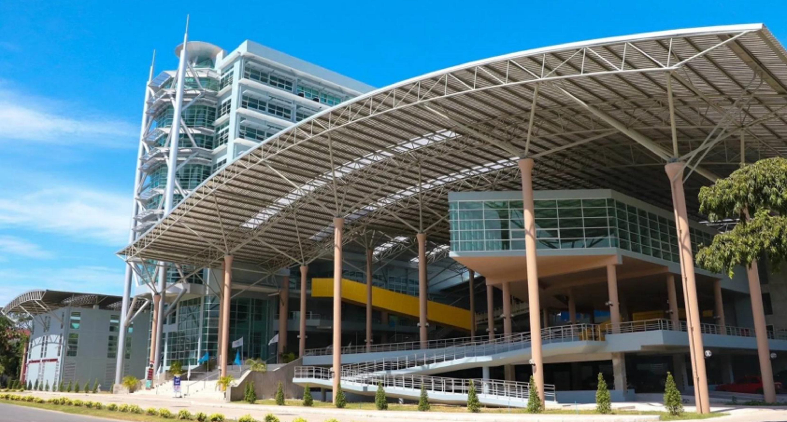

โครงการนี้จัดทำขึ้นเพื่อออกแบบและนำเสนอแผนการติดตั้งระบบเครือข่ายคอมพิวเตอร์สำหรับอาคารศรีวิศววิทยา คณะวิศวกรรมศาสตร์ มทร.ศรีวิชัย
มีวัตถุประสงค์หลักดังนี้
1. เพื่อวางระบบเครือข่ายประสิทธิภาพสูง: ออกแบบโครงข่ายที่สามารถรองรับการส่งข้อมูลความเร็วสูงและมีเสถียรภาพ เพื่อสนับสนุนการเรียนการสอนและการทำงานภายในอาคาร
2. เพื่อให้ครอบคลุมทุกพื้นที่ใช้งาน: สร้างระบบเครือข่ายที่ครอบคลุมพื้นที่ใช้งานตั้งแต่ชั้น 3 ถึงชั้น 10 ทำให้สามารถเชื่อมต่ออินเทอร์เน็ตและเครือข่ายภายในได้จากทุกจุดที่ต้องการ
3. เพื่อรองรับการเชื่อมต่อที่หลากหลาย: ออกแบบให้ระบบสามารถรองรับการเชื่อมต่ออุปกรณ์จำนวนมาก ทั้งแบบใช้สาย (Wired) ผ่านคอมพิวเตอร์ตั้งโต๊ะ และแบบไร้สาย (Wireless) ผ่าน Access Point ที่รองรับเทคโนโลยี Wi-Fi 6
4. เพื่อจัดทำประมาณการงบประมาณ: คำนวณและสรุปค่าใช้จ่ายทั้งหมดที่จำเป็นสำหรับจัดซื้ออุปกรณ์เครือข่ายหลักและอุปกรณ์เสริม เพื่อใช้ในการวางแผนงบประมาณโครงการ
อาคารศรีวิศววิทยา

อาคารศรีวิศววิทยา เป็นอาคารเรียนและปฏิบัติการของคณะวิศวกรรมศาสตร์ภายในประกอบด้วยห้องเรียน ห้องปฏิบัติการ ห้องประชุม และสำนักงานคณะ อาคารนี้มีทั้งหมด 10 ชั้น พร้อมลิฟต์โดยสารและระบบรักษาความปลอดภัยครบถ้วน
การวางระบบเครือข่ายคอมพิวเตอร์ (Computer Network Installation)
ความหมายของระบบเครือข่ายระบบเครือข่ายคอมพิวเตอร์ (Network) คือการเชื่อมต่อคอมพิวเตอร์และอุปกรณ์ต่าง ๆ เข้าด้วยกัน เพื่อให้สามารถส่งข้อมูล ติดต่อสื่อสาร และใช้งานทรัพยากรร่วมกัน เช่น ไฟล์ เครื่องพิมพ์ อินเทอร์เน็ต หรือระบบเซิร์ฟเวอร์ โดยการวางระบบเครือข่ายที่ดีจะช่วยเพิ่มประสิทธิภาพในการทำงาน การเรียนรู้ และการบริหารจัดการในองค์กร
ประเภทของเครือข่าย (Network Types)
- LAN (Local Area Network)
เครือข่ายภายในพื้นที่จำกัด เช่น ภายในอาคารเรียนหรือสำนักงาน ความเร็วสูง ติดตั้งง่าย เหมาะกับการใช้งานร่วมกันในองค์กรขนาดเล็กถึงกลาง - WLAN (Wireless LAN)
เหมือนกับ LAN แต่ใช้การเชื่อมต่อแบบไร้สาย (Wi-Fi) ลดการใช้สาย และสะดวกต่อการเคลื่อนย้ายอุปกรณ์ - MAN (Metropolitan Area Network)
เชื่อมโยงหลาย LAN ในเมืองเดียวกัน เช่น มหาวิทยาลัยหลายคณะ - WAN (Wide Area Network)
เครือข่ายขนาดใหญ่ เชื่อมโยงข้ามเมือง/ประเทศ เช่น อินเทอร์เน็ต
อุปกรณ์ในระบบเครือข่าย
- Router (เราเตอร์): อุปกรณ์ที่เชื่อมต่อ LAN กับเครือข่ายภายนอก เช่น อินเทอร์เน็ต มีการจัดสรร IP และควบคุมการรับส่งข้อมูล
- Switch (สวิตช์): กระจายข้อมูลไปยังอุปกรณ์ต่าง ๆ ภายใน LAN โดยไม่ชนกัน
- Access Point (AP): ให้บริการเครือข่ายแบบไร้สาย (Wi-Fi)
- Firewall: ป้องกันเครือข่ายจากภัยคุกคาม เช่น ไวรัสหรือแฮกเกอร์
- สายสัญญาณ (UTP, Fiber Optic): เชื่อมโยงอุปกรณ์แบบมีสาย UTP ใช้ทั่วไป / Fiber Optic ใช้ในเครือข่ายความเร็วสูง
ขั้นตอนการวางระบบเครือข่าย
- วิเคราะห์ความต้องการ
- จำนวนผู้ใช้งาน
- ประเภทการใช้งาน (ดูวิดีโอ, พิมพ์งาน, ฯลฯ)
- พื้นที่ที่ครอบคลุม
- ออกแบบเครือข่าย (Network Design)
- ผังเครือข่าย (Topology) เช่น Star, Mesh
- เลือกอุปกรณ์ให้เหมาะสม
- กำหนด IP, VLAN, การเข้าถึงระบบ
- เตรียมสถานที่และติดตั้งอุปกรณ์
- เดินสายสัญญาณ
- ติดตั้ง Router, Switch, AP
- เชื่อมต่ออุปกรณ์ปลายทาง
- ตั้งค่าและทดสอบระบบ
- ตั้งค่า IP Address, DHCP
- ตรวจสอบการเชื่อมต่อและความเร็ว
- แก้ไขปัญหา (Debug)
- ดูแลและบำรุงรักษา
- อัปเดต Firmware
- สำรองข้อมูล (Backup)
- ตรวจสอบความปลอดภัย (Security Monitoring)
โครงสร้างเครือข่ายพื้นฐาน
- Core Layer: เป็นแกนกลางของเครือข่าย มีความเร็วสูง เชื่อมต่อกับภายนอก
- Distribution Layer: เชื่อมโยง Core กับ Access ควบคุมการรับส่งข้อมูล
- Access Layer: เป็นจุดเชื่อมต่อของผู้ใช้งาน เช่น PC, Notebook, Smart Device
ความสำคัญของการวางระบบเครือข่ายที่ดี
- ลดต้นทุนการทำงานซ้ำซ้อน
- เพิ่มประสิทธิภาพการสื่อสาร
- สนับสนุนการเรียนรู้และการบริหารจัดการ
- ส่งเสริมระบบ Smart Campus หรือ Smart Office
- สร้างมาตรฐานและความปลอดภัยของข้อมูล
ตัวอย่างการใช้งานในสถานศึกษา
- การเชื่อมโยงห้องเรียนกับศูนย์ข้อมูลกลาง
- การเข้าถึงอินเทอร์เน็ตสำหรับนักเรียน/บุคลากร
- ระบบบันทึกคะแนน/การเรียนออนไลน์
- กล้องวงจรปิด (CCTV) และระบบรักษาความปลอดภัยผ่านเครือข่าย